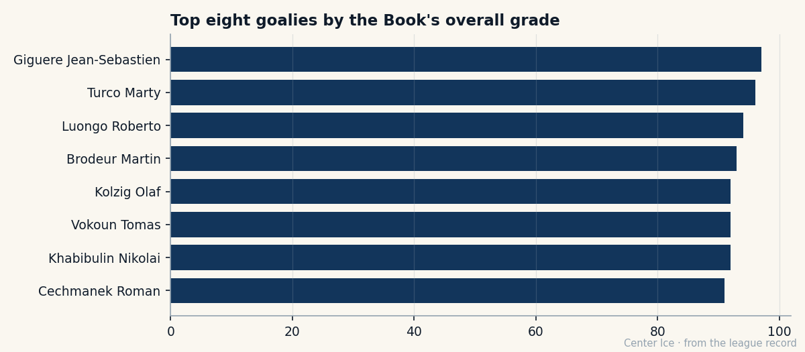

At 27, we finally know who he is: the making of Jean-Sebastien Giguere
The Book has the highest goalie grade in the league at 97. The scoreboard says 12-15. The gap is a whole career, from the Mille Îles to a July that will cost someone a lot of money.
 Carol BinghamFeatures writer · Rinkside
Carol BinghamFeatures writer · RinksideThe Bureau's Book puts  Jean-Sebastien Giguere93 at 97. That is the highest overall grade of any goaltender in the league, four above the next. In front of him, the scoreboard in 28 games says 12-15, a 3.00 goals against average, a 0.872 save percentage. The distance between those two numbers is a career.
Jean-Sebastien Giguere93 at 97. That is the highest overall grade of any goaltender in the league, four above the next. In front of him, the scoreboard in 28 games says 12-15, a 3.00 goals against average, a 0.872 save percentage. The distance between those two numbers is a career.

He is 27. Born in Montreal, raised in the Mille Îles, the islands off Laval, where he played in the Quebec International Pee-Wee Tournaments in 1990 and 1991. The Hartford Whalers drafted him 13th overall in 1995 with a pick they acquired from the New York Rangers in a trade for Pat Verbeek. He played 8 games in 1996-97. Then the Whalers became the Carolina Hurricanes, and in August 1997 Giguere was dealt to Calgary along with centre Andrew Cassels for  Gary Roberts85 and Trevor Kidd.
Gary Roberts85 and Trevor Kidd.
Four seasons in the Flames system. 15 games in 1998-99, 7 in 1999-2000, the rest in Saint John, where he posted a 2.46 GAA in 31 games. No one watches Saint John. No one writes about it. You do it anyway, for four years, and then a GM in another city makes a phone call.
On June 10, 2000, the  Mighty Ducks of Anaheim traded a second-round pick for him. He started the 2000-01 season in Cincinnati, got recalled, and has not left. His first full season, 2001-02, brought a 2.13 GAA in 53 games. In 2002-03 he posted his first winning record, 34-22-6, and a career-high 8 shutouts.
Mighty Ducks of Anaheim traded a second-round pick for him. He started the 2000-01 season in Cincinnati, got recalled, and has not left. His first full season, 2001-02, brought a 2.13 GAA in 53 games. In 2002-03 he posted his first winning record, 34-22-6, and a career-high 8 shutouts.
The playoffs that followed are the turn. Seventh seed, Western Conference. Giguere carried them deeper than anyone expected, and the Ducks lost. He was named the Conn Smythe winner as a member of the losing team, the fifth player ever to do it, the first since Ron Hextall in 1987. He also won the 2003 ESPY for best hockey player. The extension came on September 10, 2003: 4 years.
Then 2003-04 happened. 66 games, 30 wins, 36 losses, 2 shutouts, 213 goals against. The Ducks missed the playoffs. In the 2003 postseason he had been pulled in a Game 5 after 3 goals on 8 shots, and  Ilja Bryzgalov77 took over and reeled off 3 straight shutouts across the first two rounds, tying an NHL playoff record. The season that followed did not look like the one that produced a Conn Smythe.
Ilja Bryzgalov77 took over and reeled off 3 straight shutouts across the first two rounds, tying an NHL playoff record. The season that followed did not look like the one that produced a Conn Smythe.
| Season | GP | W | L | SO |
|---|---|---|---|---|
| 2003-04 | 66 | 30 | 36 | 2 |
| 2004-05 | 28 | 12 | 15 | 0 |
Now the room is different again. The Mighty Ducks of Anaheim sit at 32 points in 31 games, 12-12-6, a goal differential of minus 3. The last 10 are a patchwork: 4 wins, 4 losses, 2 overtime losses. On the road through the stretch they are 3-7-1. The men around him are young.  Sergei Fedorov86, 34, has 41 points in 31 games and is the oldest man in the room. The rest are kids who learned to play hockey watching him on a tape in a living room in some small town.
Sergei Fedorov86, 34, has 41 points in 31 games and is the oldest man in the room. The rest are kids who learned to play hockey watching him on a tape in a living room in some small town.
Head coach Mike Babcock said it plainly to The Tunnel's Jan Kowalczyk after the 3-4 overtime loss in Buffalo on December 4. "Jean-Sebastien is our guy. 10 and 13, you know, that's not a record that, you look at the numbers, that's not his fault. He's our starter. I'm not going to get into this, I've answered it before, I'll answer it again if you want, but he's our number one. We've got to score more around him."

That is the sentence that matters. The wins are not coming, and the wins are not his to give. The coach is saying the thing every player in that room already knows: the 12 and the 15 are not his numbers to carry alone.
Giguere himself, asked about the scoreboard, told The Tunnel the same way. "I don't think about the number," he said after the 3-2 win over  Chicago Blackhawks on December 6. "I go out, I play. The coach, he believes in me, and the guys in front, they believe, and that's enough. The record, it's not mine alone. We win, we lose, together. We have to be better, that's it. I'll, I'll take the next one."
Chicago Blackhawks on December 6. "I go out, I play. The coach, he believes in me, and the guys in front, they believe, and that's enough. The record, it's not mine alone. We win, we lose, together. We have to be better, that's it. I'll, I'll take the next one."
The 97 on the Book is a measurement of what he is doing right now, night to night. The grades that sit at 99 are the 5-hole save, the agility, the speed, the recovery, the glove save, the stick save. The TOUG grade is 50. The FIGH grade is 51. No one is asking him to do anything with those. He plays 61.5 minutes a game for a team that cannot give him the wins, and he keeps showing up the same way.
The question that will be asked in July is not whether he is good. It is what he is worth. He is on $0.80M. He is 27. He is the highest-graded goalie in the league and the league knows it. The extension that was signed after the Conn Smythe, after the ESPY, after a playoff run in which someone else got the shutouts, is up.
He does not seem to be thinking about it. "We have to be better, that's it," he said. The next one was December 15, a 3-2 win over  Pittsburgh Penguins. The next one after that is another night, another 61 minutes, another 12 or another 15. The Book says 97. In July, someone will say a number with more zeros than 0.80 has, and the Mille Îles kid from Laval will sign it.
Pittsburgh Penguins. The next one after that is another night, another 61 minutes, another 12 or another 15. The Book says 97. In July, someone will say a number with more zeros than 0.80 has, and the Mille Îles kid from Laval will sign it.